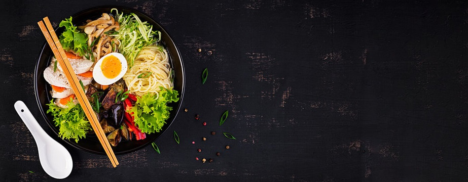
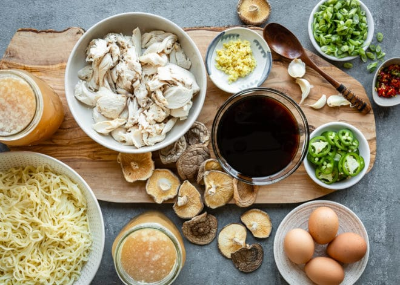
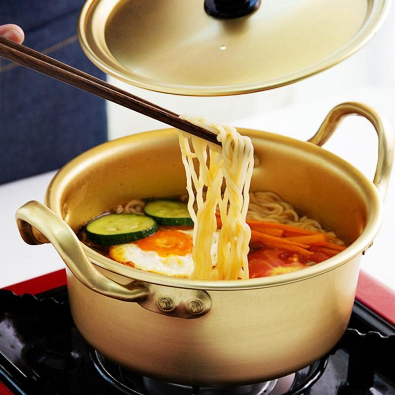

Description
Ramen is a Japanese noodle soup. It consists of Chinese wheat noodles served in a meat or
fish-based broth, often flavored with soy sauce or miso, and uses toppings such as sliced pork,
nori, menma, and scallions. Nearly every region in Japan has its own variation of ramen, such as the
tonkotsu (pork bone broth) ramen of Kyushu and the miso ramen of Hokkaido. Mazemen is a ramen
dish that is not served in a soup, but rather with a sauce (such as tare).
Ingredients

- 6 (5-ounce) packages fresh, thin, and wavy ramen noodles
- 3 to 4 large eggs, depending on the number of diners
- 6 to 6 1/2 pounds chicken wings
- 4 medium carrots (about 8 ounces), cut into 1/2-inch-thick rounds
- 3 small bunches scallions (12 to 18), roots trimmed
- 10 cups water, divided
- 1 head garlic, skin on, roots removed, cut in half horizontally
- 1 (2-inch) piece ginger, peeled and cut into 1/4-inch pieces
- 20 dried shiitake mushrooms (about 2 ounces)
- 1 (6-inch) sheet dried kombu (sea vegetable or seaweed)
- 1/4 cup soy sauce
Directions

- First begin by preparing your chosen toppings. You can fry the shiitake mushrooms and bamboo shoots with a
little soy sauce to give them a richer flavour. Although naruto fishcakes don’t have much flavour on their
own,
the pink spiral definitely adds a touch of colour to your ramen noodle soup so slice up a few pieces of it.
You can also choose to include lots of spring onion and nori seaweed to make a 100% vegan ramen called negi
ramen.
- You may wonder which is the best flavour for your ramen soup, soy sauce or miso.
Soy sauce broth has a light and salty flavour and miso broth is a rich flavoured choice that originates from Hokkaido.
Miso soup tends to be a bit thicker with a strong, salty taste.
- The preparation of your ramen is very easy, simply boil water in a large saucepan,
then add the noodles and let them cook for 2 to 3 minutes.
- While your ramen are cooking, dilute the sauce with hot water in a bowl.
The amount of water you use is up to you depending on how strong you want your soup to taste.
Start by adding approximately 250ml of water to the soup base and add a little water until you get just the right taste for you.
- Lastly, add your noodles and soup to a bowl, then your prepared toppings.
Like many types of Japanese cuisine, presentation is key to a perfect bowl of ramen.
As Japanese people say, a lot of the feelings of hunger come from your eyes, not your stomach.